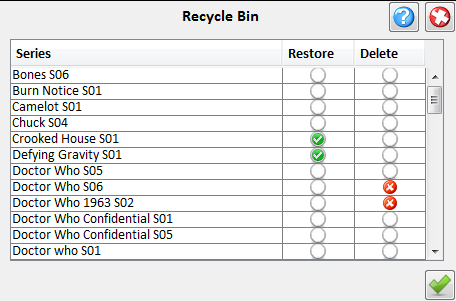

| Recycle Bin |
|---|
|  |
|
Brings up the recycle bin panel to restore or totaly delete previously deleted series. To restore one or more series check their restore checkbox and press the restore button. To totaly delte one check their delete checkbox. (This action cannot be undone as the series is deleted from the database along with it's ratings and episodes) |